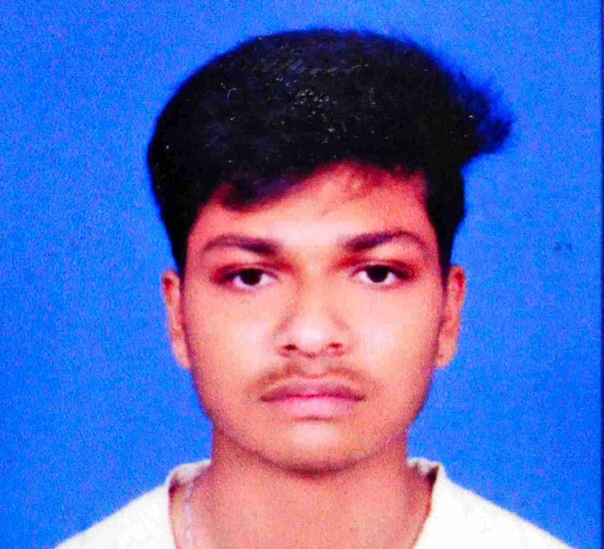

Name: Dipan Basak
Address: Phulia, Colony, Nadia, 741402

Phone Number: +91-9679901166
G-Mail: dipaneducation46@gmail.com
Objective: At the entry-level seeking a challenging career to improve my skills
Professional Profile:
- Basic knowledge about Mechanical machines, Boilers.
- Experience in operation of different types of machines and equipment
- Acquired computer skills to manage different tasks
- Focus on fulfilling targets and quality work
Technical Skills:
- Acquired skills of basic programming in language C, HTML, CSS
- I also know basic AutoCAD, SolidWorks, Microsoft Office
- Level 1 to level 4 IT & ITES from NSQF
- Operated machines in the laboratory and learned working principles
Academic Qualification:
- Diploma in Mechanical Engineering from WBSCTE (2019-2022)
- Passed Higher Secondary from WBCHSE (2017-2019) securing 61.2% marks
- Passed Secondary Examination from WBBSE (2016-2017). Received 67.14% marks
Additional Skills:
- Knowledge about safety and standard procedure
- Skilled in Technical Drawing
- Word processing
Hobby:
- Programming
- Playing video games
- Listening to music
- Watching sports
- Watching movies
- Watching anime
- Watching series